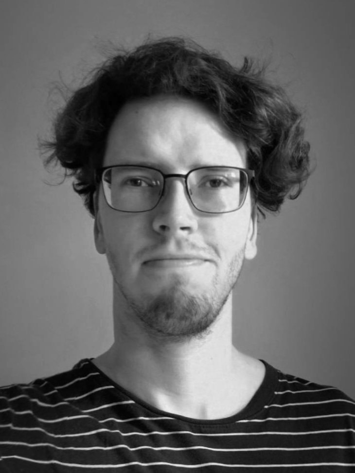

|
I am a Ph.D. student at the Intelligent Machine Perception group with the Czech Institute of Informatics, Robotics and Cybernetics (CTU Prague) under the supervision of Josef Šivic. I obtained my M.Sc. degree in Visual Computing at Faculty of Mathematics and Physics, Charles University in Prague in 2024. |
 |
Research
My research interests include object detection, 6D pose estimation and tracking. I am currently working on 6D pose estimation tasks in the wild where precise model is unknown or unavailable.

|
Martin Cífka, Georgy Ponimatkin, Yann Labbé, Bryan Russell, Mathieu Aubry, Vladimir Petrik, Josef Sivic TPAMI, 2024. arxiv / code A render and compare method for 6D pose estimation in uncalibrated settings. |
Teaching
Robotics practicals, CTU FEE, Winter 2024|
This website is based on the template provied by Jon Barron. |